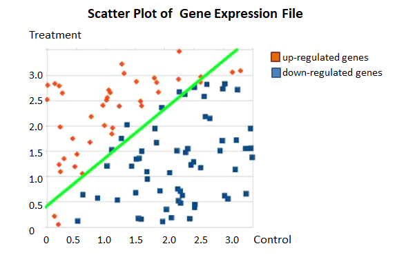

4. Functional requirements
4.1 Input
A valid submitted gene expression file has the following format:
- It is a TAB-delimited, plain text file with three columns (see the attached file for a full example).
- The file contains an optional head line, followed by each gene's expression in a control sample (e.g., ControlSample) and in a treatment sample (e.g., KnockOutSample).
| gene_id | ControlSample | KnockOutSample |
|---|---|---|
| AT1G01010 | 1.198558083 | 2.036161827 |
| AT1G01020 | 13.75736234 | 13.370796 |
| AT1G01030 | 0.833779536 | 0.203616183 |
| AT1G01040 | 9.58846466 | 7.126566394 |
| AT1G01046 | 0 | 0 |
| AT1G01050 | 23.81482799 | 21.10821094 |
| AT1G01060 | 0.625334652 | 1.221697096 |
| AT1G01070 | 1.719670292 | 0.950208853 |
| AT1G01080 | 28.34850421 | 25.24840665 |
| AT1G01090 | 58.26034505 | 42.96301455 | AT1G01100 | 1066.508249 | 1308.030358 |
| AT1G01110 | 2.709783491 | 1.425313279 |
4.2 Output
The web application displays a table and a scatter plot given a gene expression file.
4.2.1 Table
The table contains a list of differentially expressed genes with the following format:
gene_id ControlSample TreatSample log_2[FC] AT1G01010 1.198558083 2.036161827 0.76
4.2.2 Scatter plot
The scatter plot displays differentially expressed genes. The X-axis is Control, and Y-axis is Treatment. (fig.2).Replace 'Control' and 'Treatment' with appropriated column names if provided in the uploaded file. The up-regulated genes are shown in red dots, and down-regulated genes are shown in blue.
fig.2